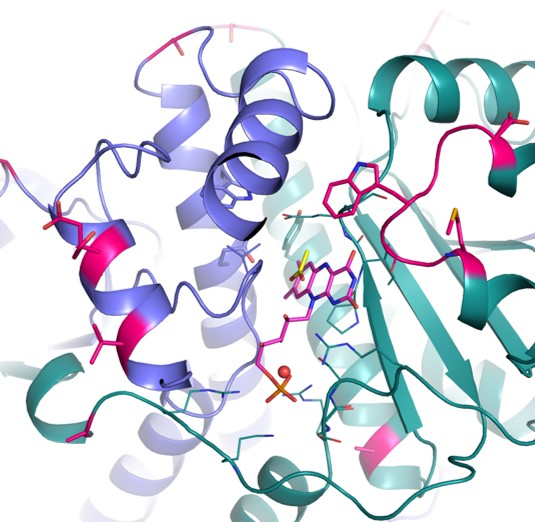
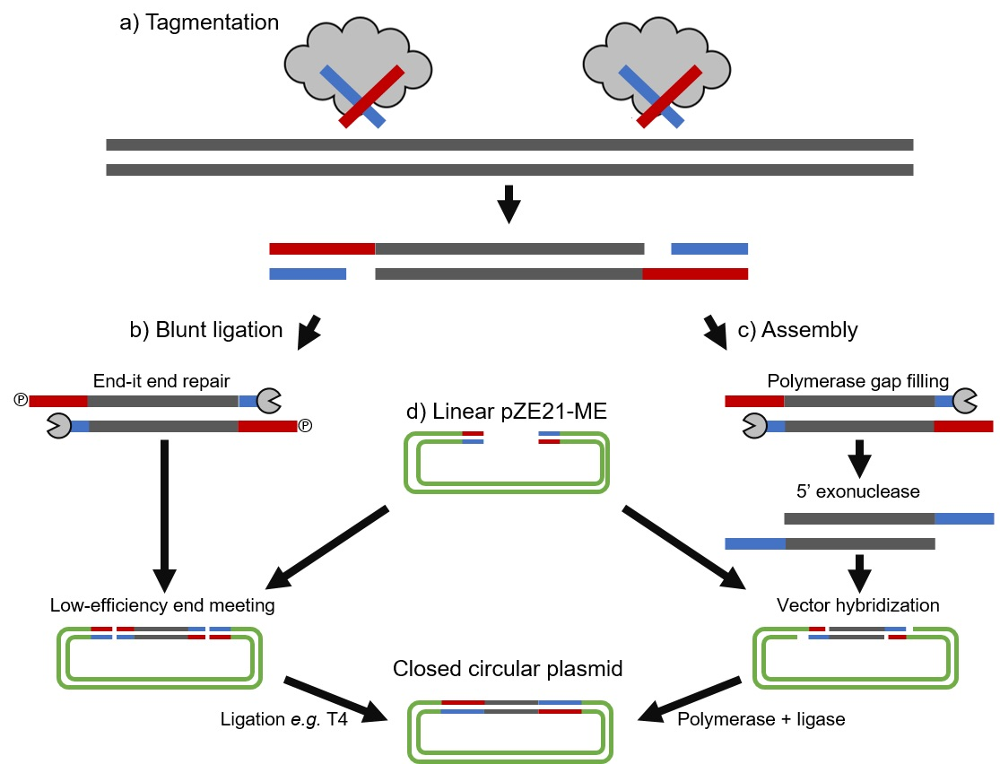
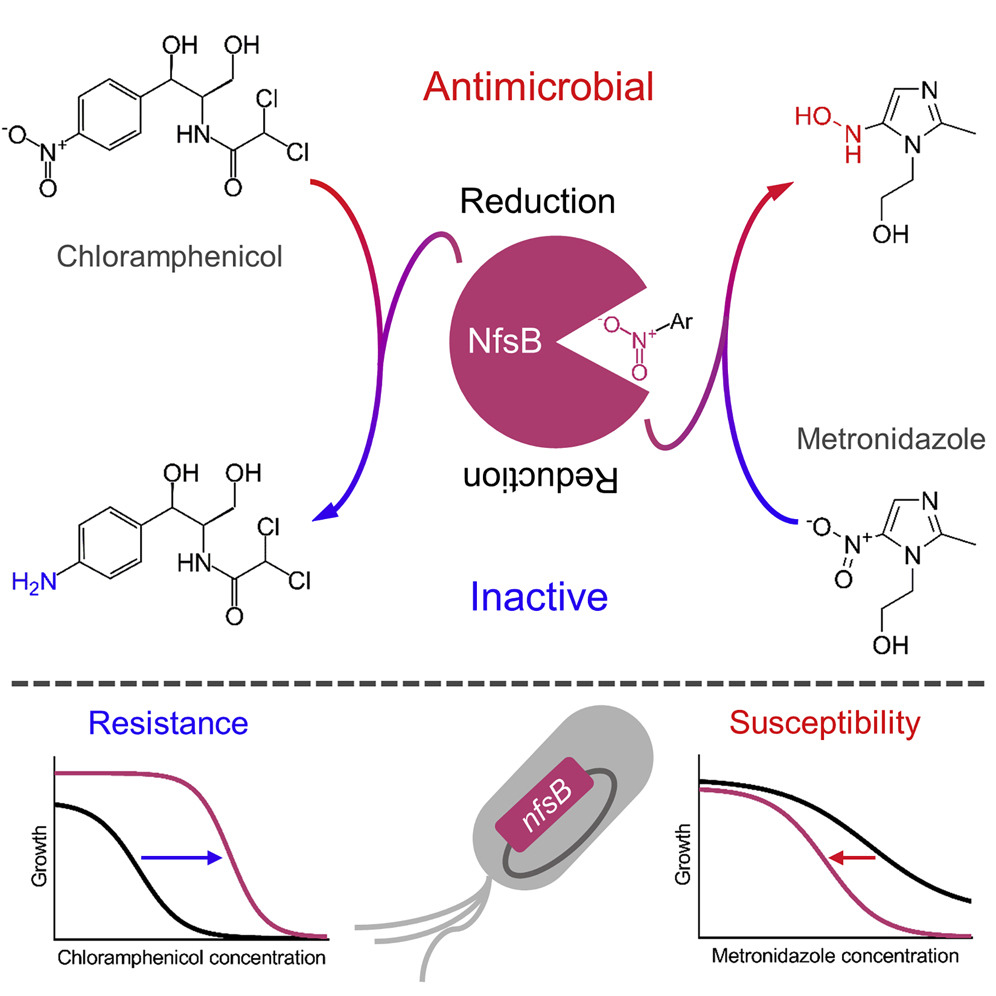
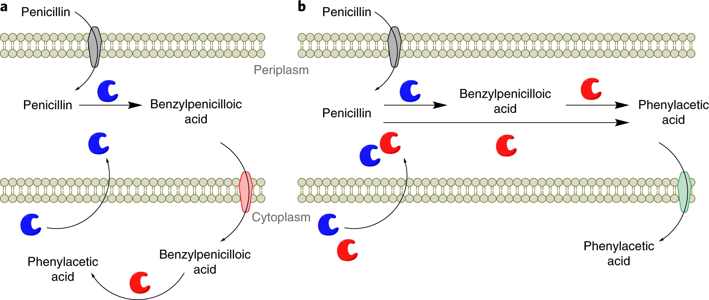
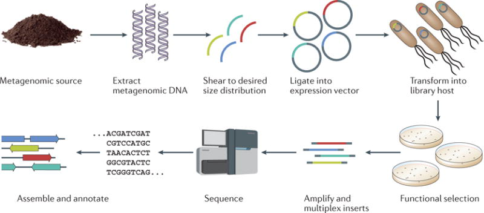
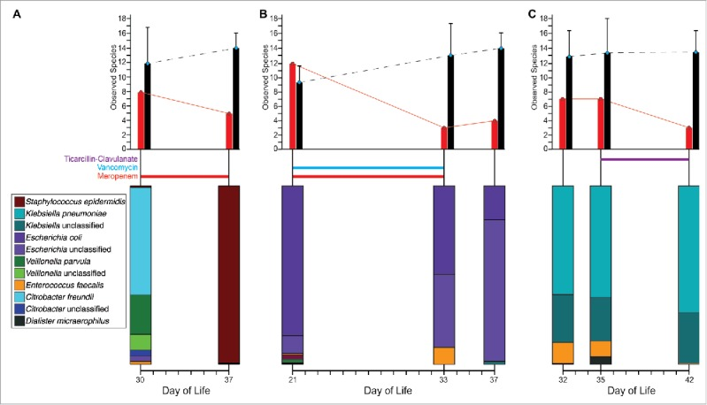
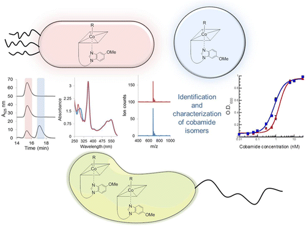
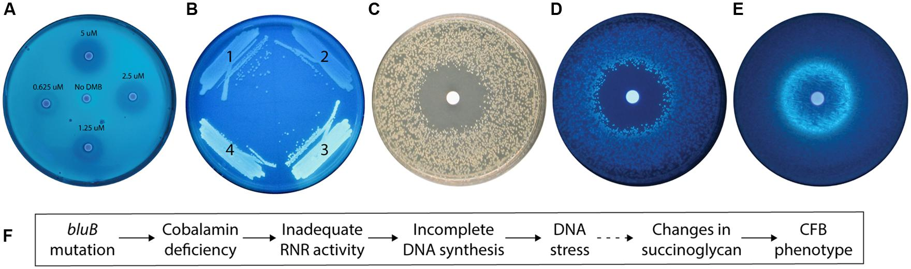
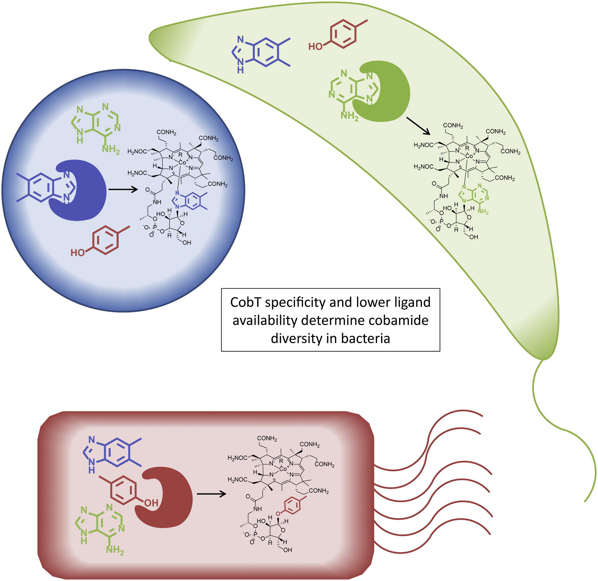
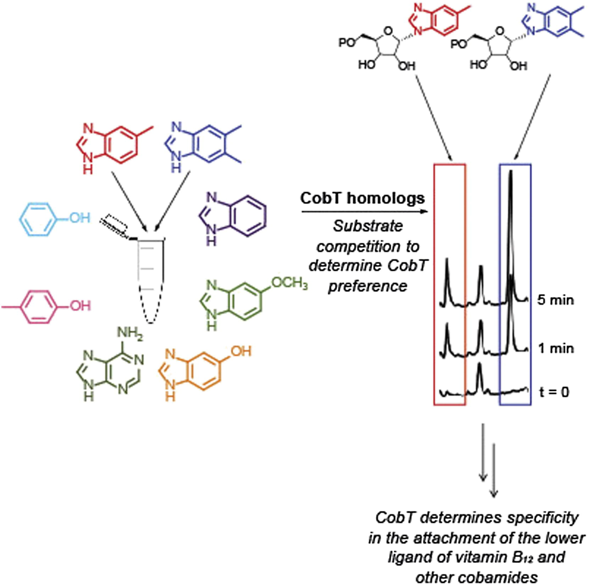

Publications
CV
*Authors contributed equally to these works
†Shared corresponding author position
- Mullowney MW, Maltseva NI, Endres M, Kim Y, Joachimiak A, Crofts TS†,(2022) Functional and structural characterization of diverse NfsB chloramphenicol reductase enzymes from human pathogens. Microbiology Spectrum, 10 (2). e00139-22. [PDF]

- Crofts TS†, McFarland AG, Hartmann EM (2021) Mosaic Ends Tagmentation (METa) assembly for extremely efficient construction of functional metagenomic libraries. mSystems, 6 (3). e00524-21. [PDF]

- Crofts TS†, Sontha P, King OA, Wang B, Biddy BA, Zanolli N, Gaumnitz J, Dantas G (2019) Discovery and characterization of a nitroreductase capable of conferring bacterial resistance to chloramphenicol. Cell Chemical Biology 26 (4). 559-70.[PDF]

- Crofts TS, Wang B, Spivak A, Gianoulis TA, Forsberg KJ, Gibson MK, Johnsky LA, Broomall SM, Rosenzweig CN, Skowronski EW, Gibbons HS, Sommer MOA, Dantas G (2018) Shared strategies for β-lactam catabolism in the soil microbiome. Nature Chemical Biology, 14 (6). 556-64.[PDF]

- Keen EC*, Crofts TS*, Dantas G (2018) Checkpoint checkmate: Microbiota modulation of cancer immunotherapy. Clinical Chemistry, 64 (9). 1280-3.[PDF]
- Crofts TS, Wang B, Spivak A, Gianoulis TA, Forsberg KJ, Gibson MK, Johnsky LA, Broomall SM, Rosenzweig CN, Skowronski EW, Gibbons HS, Sommer MOA, Dantas G (2017) Draft genome sequences of three β-lactam-catabolizing soil Proteobacteria. Genome Announcements, 5 (32). 8-10.[PDF]
- Crofts TS*, Gasparrini AJ*, Dantas G (2017) Next-generation approaches to understand and combat the antibiotic resistome. Nature Reviews Microbiology, 15 (7), 422-34.[PDF]

- Gasparrini AJ*, Crofts TS*, Gibson MK, Tarr PI, Warner BB, Dantas G (2016) Antibiotic perturbation of the preterm infant gut microbiome and resistome. Gut Microbes, 7 (5), 443-9.[PDF]

- Gibson MK*, Crofts TS*, Dantas G (2015) Antibiotics and the developing infant gut microbiota and resistome. Current Opinion in Microbiology, 27, 51-6.[PDF]
- Crofts TS*, Hazra AB*, Tran JLA, Sokolovskaya O, Osadchiy V, Ad O, Pelton J, Bauer S, Taga ME (2014) Regiospecific formation of cobamide isomers is directed by CobT. Biochemistry, 53 (49), 7805-15.[PDF]

- Crofts TS, Men Y, Alvarez-Cohen L, Taga ME (2014) A bioassay for the detection of benzimidazoles reveals their presence in a range of environmental samples. Frontiers in Microbiology. 5:592.[PDF]

- Men Y, Seth EC, Yi S, Crofts TS, Allen RH, Taga ME, Alvarez-Cohen L (2014) Identification of specific corrinoids reveals corrinoid modifications in dechlorinating microbial communities. Environmental Microbiology, 17 (12), 4873-84.[PDF]
- Crofts TS, Seth EC, Hazra AB, Taga ME (2013) Cobamide structure depends on both lower ligand availability and CobT substrate specificity. Chemistry and Biology, 20 (10), 1265-74.[PDF]

- Hazra AB, Tran JLA, Crofts TS, Taga ME (2013) Analysis of substrate specificity in CobT homologs reveals widespread preference for 5,6-dimethylbenzimidazole, the lower axial ligand of vitamin B12. Chemistry and Biology, 20 (10), 1275-85.[PDF]

- Bowerman NA, Crofts TS, Chlewicki L, Do P, Baker BM, Garcia KC, Kranz DM (2009). Engineering the binding properties of the T cell receptor:peptide:MHC ternary complex that governs T cell activity. Molecular Immunology, 46 (15), 3000-8.[PDF]
Popular press
- Crofts, Terence S. “Bacteria may be powerful weapon against antibiotic resistance.” The Conversation, May 2nd, 2018,theconversation.com/bacteria-may-be-powerful-weapon-against-antibiotic-resistance-95750.